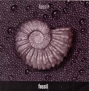

| Artist: | Fossil |
| Title: | Fossil |
| Label: | Poseidon Records PRM-003 |
| Length(s): | 47 minutes |
| Year(s) of release: | 2003 |
| Month of review: | [12/2003] |
| 1) | Upper Stream | 1.24 |
| 2) | 8*7=56 (Recitative) | 0.59 |
| 3) | Noble Fish Jumping | 2.49 |
| 4) | Crescent | 5.20 |
| 5) | Notice (Outspoken) | 0.29 |
| 6) | River Bank Cyclist | 3.51 |
| 7) | Tea Ceremony | 2.49 |
| 8) | Armchair Fisherman | 4.01 |
| 9) | The Ascetic | 3.25 |
| 10) | Water Witch | 4.12 |
| 11) | Wavering Life, Weaving Lines | 9.19 |
| 12) | A Current In The Vein | 3.39 |
| 13) | Autumn Rain | 3.29 |
| 14) | Lower Reaches | 1.55 |
The first seven tracks sound like the nineties solowork of Robert Fripp. Be both find tracks that have an electronic feel, close so soundscapes from that period, as well as we find more guitar oriented material.
The second part, starting from track 8, Armchair Fisherman, resembles the more classically oriented solo material by Steve Hackett, as can be heard most clearly on Bay Of Kings. Guitaristically the material is nice, but like Hackett's material: you have to be really into this kind of stuff, or you are going to lose attention after a couple of tracks.
A Current In The Vein is once again moving more in the direction of Fripp, especially the League of Gentlemen material, in being acoustic still. Autumn Rain stylistically falls in with its predecessor, whilst Lower Reaches mingles early Hackett solo works with the more acoustically directed King Crimson tracks (especially I Talk With The Wind).
Noticeable exceptions are Crescent, which is carried by flutish sounds and tockling guitar and River Blank Cyclist, a melancholic acoustic guitar with odd vocals. Both are quite beautiful, and really the highpoints of the album.